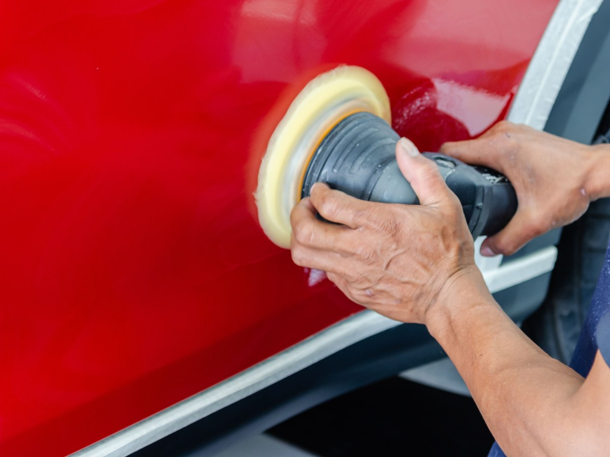
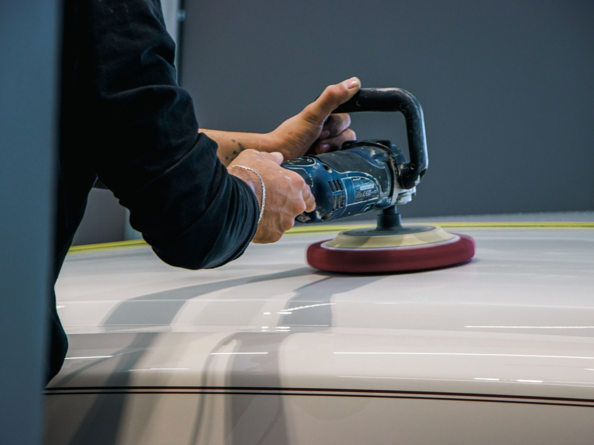
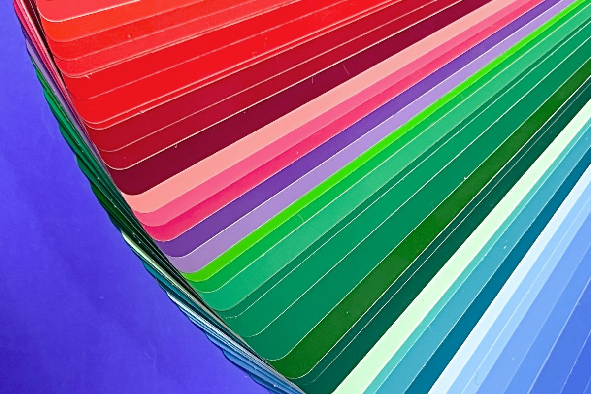
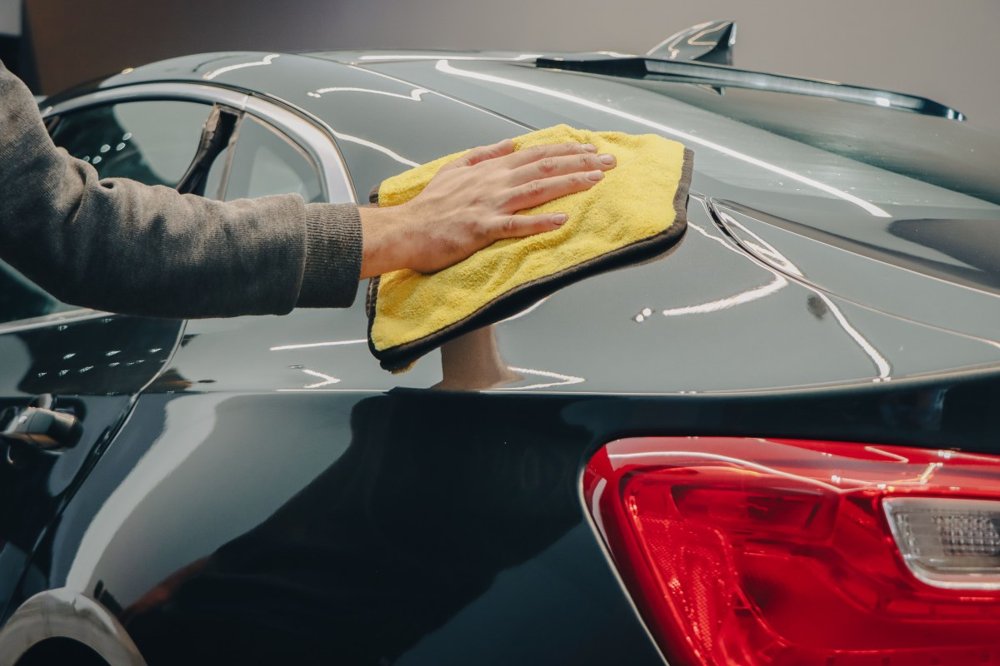
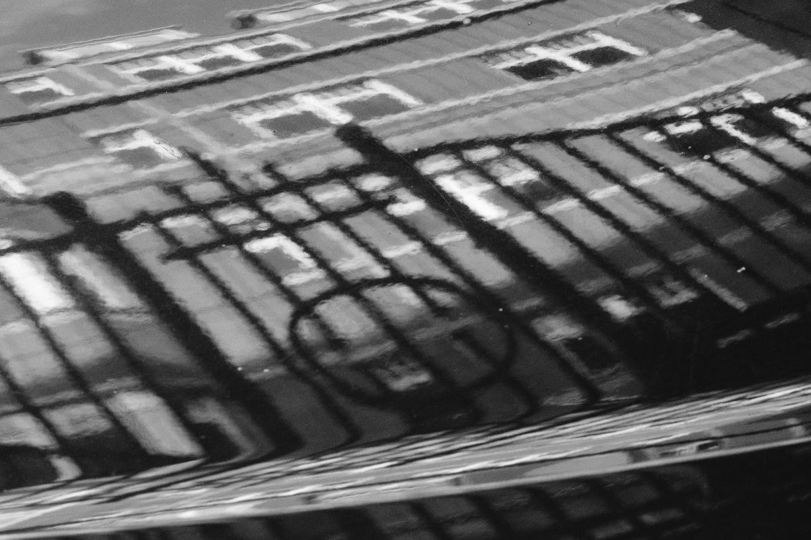
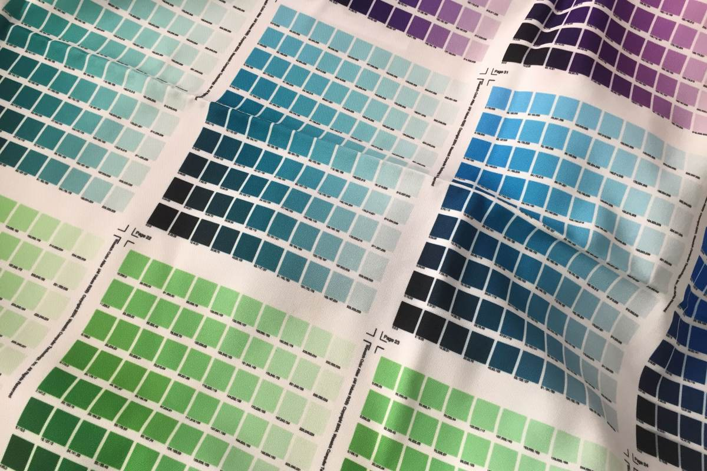
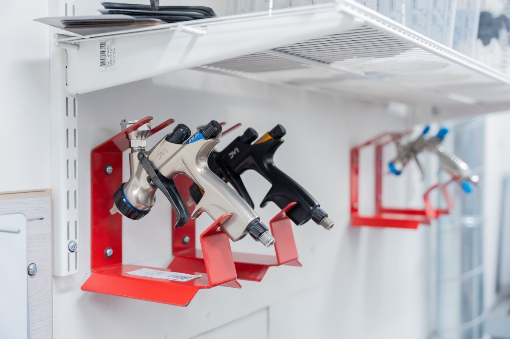

Desabolladura y pintura · Villarrica
Que no se note dónde fue el golpe.
Desabolladura, pintura, soldadura y fibra en Juan Antonio Ríos 1025.
- 54reseñas en Google
- 5,0de nota: todas de cinco
- 4oficios en un mismo taller
- 0páginas propias: no aparece en la web
La pregunta de todo el que choca
¿Va a quedar igual al resto del auto?
El color de fábrica no basta: su auto ya tiene sol encima.
- 01
Se lee el código
El color de fábrica, en la placa del auto.
- 02
Se ajusta la mezcla
Al tono que tiene hoy, no al de hace diez años.
- 03
Se prueba en una muestra
Y se compara con la pieza al sol.
- 04
Se difumina
En el panel del lado, para que no haya corte.
Cada trabajo lo evalúa el taller al ver el auto.
Mándenos fotos y le decimos.
En Juan Antonio Ríos 1025
Cuatro oficios en un mismo taller
-
El golpe
Desabolladura
La lata vuelve a su forma.
-
El color
Pintura
Por pieza o completa.
-
Lo que se cortó
Soldadura
Piezas y refuerzos.
-
Parachoques y spoilers
Fibra de vidrio
Se repara, no se bota.
-

Antes de pintar
Lijado y aparejo
La mitad del trabajo no se ve.
-

Al final
Pulido
Para que brille parejo.
Los cuatro oficios salen del registro; el detalle lo confirma el taller.
54 reseñas, todas de cinco.
En un oficio donde todo se nota
En la cabina
Del golpe al brillo





Fotos de referencia: los trabajos de verdad los muestra el taller.
Dónde estamos
Av. Juan Antonio Ríos 1025, Villarrica
- Dirección
- Av. Juan Antonio Ríos 1025
- +56 9 3611 8586
- Reseñas
- 54 en Google, nota 5,0
- Horario
- Falta el horario
Para cotizar, mande fotos del golpe con luz de día.
Av. Juan Antonio Ríos 1025, Villarrica Abrir en Google Maps
Para el dueño
Qué es real y qué falta
Lo verificado
El nombre, la dirección, el WhatsApp y las 54 reseñas con 5,0, según el registro del 27 de agosto.
Lo de ejemplo
El proceso para igualar el color y el detalle de cada oficio.
Lo que falta
El horario, valores de referencia y fotos de antes y después.